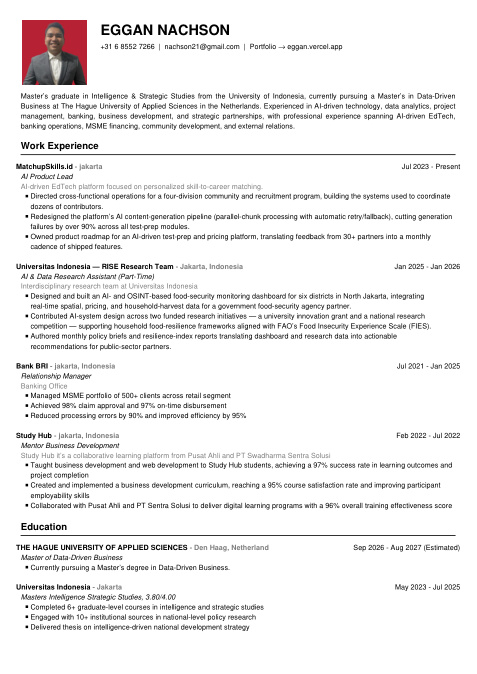
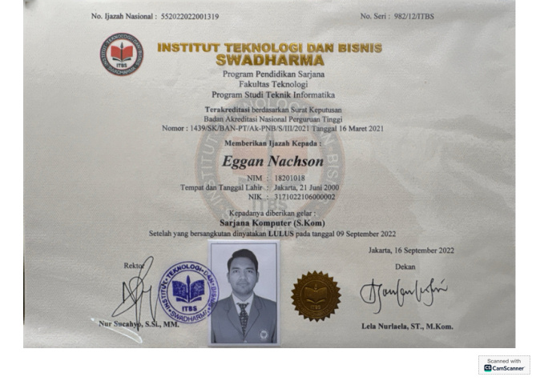
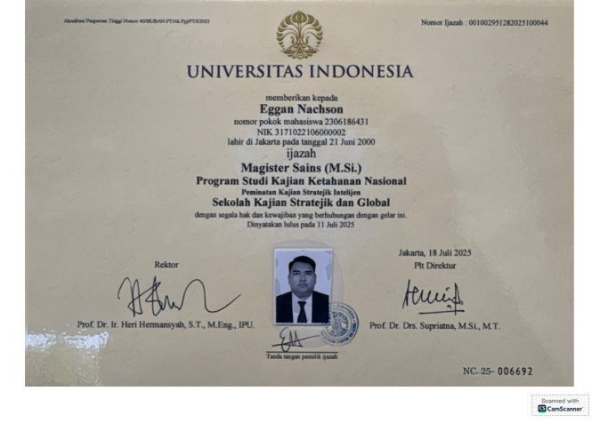
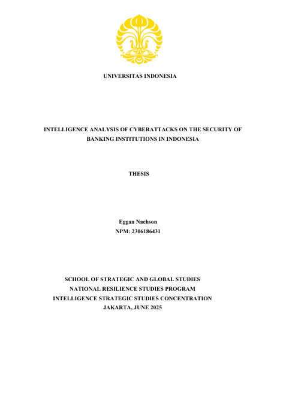
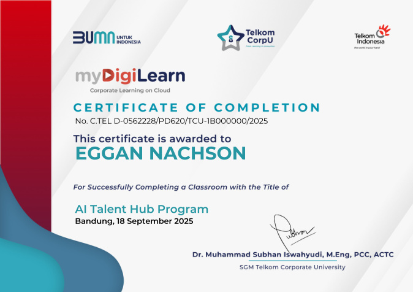

Curriculum Vitae
Full CV, 2 pages.

Full CV, 2 pages.

Universitas Indonesia.

Universitas Indonesia · The Hague University of Applied Sciences.

Universitas Indonesia — School of Strategic and Global Studies. Available in English or Indonesian.

11 pages — trainings, awards, and recognitions.